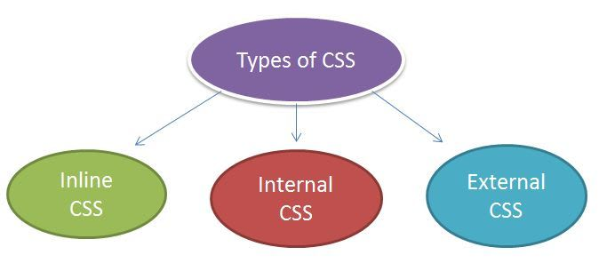
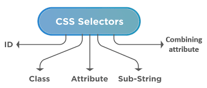

MODULE:2 (CSS and CSS 3)
1)Faster Page Speed.
2)More code means slower page speed.
3)Easy Formatting changes.
css describes how elements should be rendered o screen, on paper , in speech
Better User Experience. CSS not only makes web pages easy on the eye, it also allows for user-friendly formatting.

The benefits of css the style is applied consistently across a number of web page. Web designers needs to use few lines of programming for every page improving site speed
Confusion due to many CSS levels. Beginners are more vulnerable to this issue. ... Cross-Browser Issues. Different browsers work differently. ... Security Issues. Security is important in today's world driven by technology and data. ... Extra Work for Developers.

The biggest difference between CSS2 and CSS3 is that CSS3 is now split into different modules. Since each module makes its way through the W3C individually, there's a wider range of browser support. Make sure you test your CSS3 pages in as many browsers and operating systems as possible to ensure compatibility.
CSS is capable of positioning texts and objects. On the other hand, CSS3 is capable of making the web page more attractive and takes less time to create. CSS3 is backward compatible with CSS. CSS3 is the latest version, hence it supports responsive design
a library for React and React Native that allows you to use component-level styles in your application that are written with a mixture of JavaScript and CSS using a technique called CSS-in-JS
These rules have 3 parts: a selector, a property, and a value. You don't need to remember this in order to code CSS. Once you start coding CSS, you'll do so without thinking "this is a selector" or "that is a property".
The components of css style. 1) Selectors name: HTML element name, id name, class name. 2)background color, font-size,width,
The opacity CSS property sets the opacity of an element. Opacity is the degree to which content behind an element is hidden, and is the opposite of transparency
the desired layer, then click the Opacity drop-down arrow at the top of the Layers panel. Click and drag the slider to adjust the opacity. You'll see the layer opacity change in the document window as you move the slider. If you set the opacity to 0%, the layer will become completely transparent, or invisible.
The CSS opacity property is used to specify the transparency of an element. In simple word, you can say that it specifies the clarity of the image. In technical terms, Opacity is defined as degree in which light is allowed to travel through an object.

To add background color in HTML, use the CSS background-color property. Set it to the color name or code you want and place it inside a style attribute. Then add this style attribute to an HTML element, like a table, heading, div, or span tag.
The background-color property in CSS is used to specify the background color of an element. The background covers the total size of the element with padding and border but excluding margin. It makes the text so easy to read for the user.
The use of color is a funamental form of an element in css use the background color property.

using the background-repeat property that will help us to control the repetition of the image. The background-repeat property in CSS is used to repeat the background image both horizontally and vertically. It also decides whether the background image will be repeated or not.
The background-repeat css property set how background images are repeated. A background image can be repeat along the horizontal and vertical axes,not repeated.
The background, use the background-repeat property. You can use no-repeat value for the background-repeat property if you do not want to repeat an image, in this case, the image will display only once.
Keyword valeues:
background-repeat: repeat-x;
background-repeat: repeat-y;
background-repeat: repeat;
background-repeat: space;
background-repeat: round
background-repeat: no-repeat;
Two-value syntax: horizontal
background-repeat: repeat space;
background-repeat: repeat repeat;
background-repeat: repeat space;
background-repeat: no-repeat round;
The background-position CSS property sets the initial position for each background image
The background-position-x CSS property sets the initial horizontal position for each background image.
The background-position property sets the starting position of a background image. Tip: By default, a background-image is placed at the top-left corner of an element, and repeated both vertically and horizontally.
use a combination of position keywords: center , top , bottom , left and right . background-position: center
center;
The background image will be positioned in the center of the element.
The background-image CSS property sets one or more background images on an element.

The background-attachment property in CSS is used to specify the kind of attachment of the background image with respect to its container. It can be set to scroll or make it remain fixed. It can be applied to all HTML elements.
The background fixed, scroll, or local in CSS, we have to use the background-attachment property. Background-attachment: This property is used in CSS to set a background image as fixed or scroll. The default value of this property is scroll
keyword Values:
background-attachment; scroll;
background-attachment; fixed;
background-attachment; local;
Global values:
background-attachment: inherit;
background-attachment: initial;
background-attachment; revert;
background-attachment: revert-layer;
background-attachment: unset;
The two reasons behind this:-
it enhances the legibility of style sheets. The background property is a
complex property in css, and if it is combined with color, the complexity will further increase.
The color CSS property sets the foreground color value of an element's text and text decorations, and sets the currentcolor value.
The background-color property in CSS is used to specify the background color of an element. On the other hand, if you only use “Background:” Property, you can either specify it's valued as an image. URL or as a color code or specify the value of each background property in the below-given order.
center block elements the “display: block” property, we can make our image to block element. It can be centered using “margin: auto” property. Note: The body tag has been set to the “text-align: center” property.
Center block elements using margin property: We need to specify the margin from left and right such that it looks centered. We do not need to

The Specification defines how CSS properties should be implemented by browser vendors along with detailed algorithms, code samples and tabular information. The Specification also include: The syntax and data types of the language. Detailed explanation on CSS Selectors.
The CSS specification is no different but with a different appoach with the css.
The CSS specifications are maintained by the World Wide Web Consortium
CSS can be added to HTML documents in 3 ways:
1. Inline - by using the style attribute inside HTML elements.
2. Internal - by using a style element in the head section.
3.External - by using a
element to link to an external CSS file.

CSS stylesheets can be appiled to a HTML document in 3 type:-
inline styles, embedded styles, and
external styles.
Embedded styles:it allows you to define styles for a particular html document as a in one place.
The HTMl elements specifies relationships between the current document and external resource. This elements is most commonly used to link to styelsheets.
Embedded Stylesheet: It allows you to define styles for a particular HTML document as a whole in one place. This is done by embedding the tags containing the CSS properties in the head of your document.
An external style sheet is a separate CSS file that can be accessed by creating a link within the head section of the webpage. Multiple webpages. can use the same link to access the stylesheet. The link to an external style sheet is placed within the head section of the page.
The external style sheet is generally used when you want to make changes on multiple pages. It is ideal for this condition because it facilitates you to change the look of the entire web site by changing just one file
use the < link> tag on every page and the < link> tag shound be put inside the head section.
The help of External style sheets the style of numerous documents can be organized from one sigle file. in external style sheets, classes can be grouping can be implements to apply styles.
External style sheets have the following advantages over internal and inline styles:
1. one change to the style sheet will change all linked pages.
2. you can create classes of styles that can then be used on many different HTML elements.
3. consistent look and feel across multiple web pages.

A CSS selector is the first part of a CSS Rule. It is a pattern of elements and other terms that tell the browser which HTML elements should be selected to have the CSS property values inside the rule applied to them.
CSS selectors are used to "find" (or select) the HTML elements you want to style. We can divide CSS selectors into five categories:.
CSS 2.1 defines the following media groups:
1. continuous or paged.
2. visual, audio, speech, or tactile.
3. grid (for character grid devices), or bitmap.
4. interactive (for devices that allow user interaction), or static (for those that do not).
5. all (includes all media types)
The media attribute specifies what media/device the CSS style is optimized for. This attribute is used to specify that the style is for special devices (like iPhone), speech or print media
A table of instructions used by a controlled interface to determine what data is allowable and how the data is handled between interconnected systems
Each (valid) declaration block is preceded by one or more comma-separated selectors, which are conditions selecting some elements of the page. A selector group and an associated declarations block, together, are called a ruleset, or often a rule.

Creat layout:-
The layout of a factory; the layout of a printed circuit. The manner in which anything is laid out; arrangement;
specif., the plan or makeup of a newspaper, book page,
advertisement, etc. The thing laid out. The art or process of arranging type, illustrations, etc.
Detail in this module are:-
1. Normal flow
2. The display property
3. Flexbox
4. Grid
5. Floats
6. positioning
7. Table layout
8. Multiple-column layout
This is a wider card with supporting text below as a nutural lead in to assitional content. This content is a litle bit longer
This is a wider card with supporting text below as a nutural lead in to assitional content. This content is a litle bit longer
This is a wider card with supporting text below as a nutural lead in to assitional content. This contents is a litle bit longer